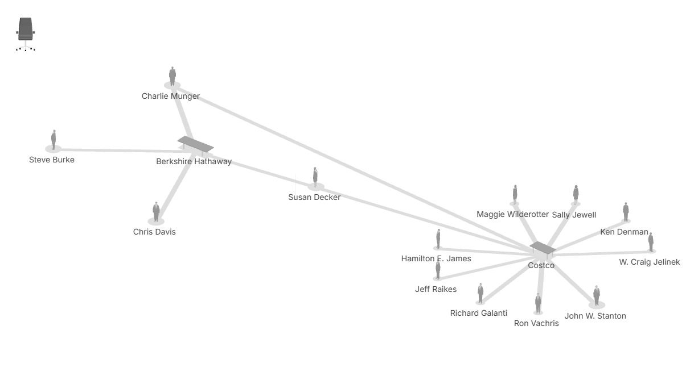
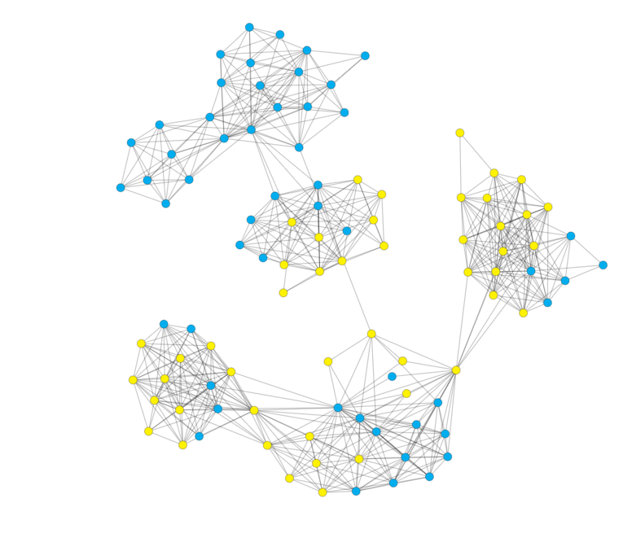

They Rule
Source:
Visit the Project
They Rule is an interactive visualization project that maps connections among corporate board members in major U.S. companies, revealing networks of power and influence. This project is relevant to my research as it demonstrates how relationships can create homogeneity within systems—whether corporate or digital. By highlighting hidden structures, They Rule parallels my investigation into how algorithms on platforms like TikTok and Douyin amplify aesthetic norms and echo chambers. My project extends this concept by exploring cultural and visual conformity in digital spaces while proposing an alternative: more inclusive algorithmic designs.

The Urban History of an Algorithm
Source:
Read the Article
This article traces the concept of homophily—“birds of a feather flock together”—and its historical role in shaping cities and digital networks. It critiques how algorithms reinforce societal segregation and echo chambers, both physically in urban planning and virtually in digital platforms. This aligns directly with my project’s focus on TikTok and Douyin, where homophily fosters localized norms and beauty standards.

Glitch Feminism: A Manifesto
Source: Legacy Russell, 2020
Read the Book
Russell’s work reimagines the glitch as a subversive tool to challenge societal and digital norms. This book provides a theoretical foundation for understanding how marginalized identities disrupt algorithmic conformity, aligning with my project’s focus on challenging aesthetic biases on short-video platforms.
It’s Complicated: The Social Lives of Networked Teens
Source: danah boyd, 2014
Read the Book
boyd explores how teens navigate identity, privacy, and audience dynamics in social media. This analysis of homophily and selective exposure offers valuable insights for understanding how localized norms propagate within Douyin and TikTok’s echo chambers.
Social Media Deepens Partisan Divides, but Not Always
Source: The New York Times, 2014
Read the Article
This article discusses how social media reinforces divisions while occasionally fostering diverse interactions. It is relevant as it underscores the nuanced impact of algorithms on user behavior, informing my exploration of homogeneity and diversity in digital echo chambers.
Echo Chamber Effects of Public Opinion Propagation in Social Networks
Source: Gao, Y., Sun, Y., Liu, F., Gao, L., & Jin, M. (2022)
Read the Article
This study examines how public opinion spreads and intensifies within echo chambers. It contributes to my project by offering a structural understanding of information flow, particularly in localized digital environments like Douyin.
The Impact of #Beauty and #Self-Compassion TikTok Videos
Source: Veya Seekis, Richelle Kennedy, Body Image, Volume 45, 2023, Pages 117-125
Read the Article
This study explores how TikTok content focusing on beauty and self-compassion affects young women’s appearance shame, anxiety, and comparison processes. It is highly relevant to my project as it highlights the psychological impact of beauty standards perpetuated on TikTok, reinforcing the need to critique algorithmic biases shaping aesthetic norms.